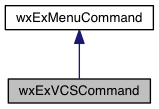

This class contains a single vcs command. More...
#include <wx/extension/vcscommand.h>
Inheritance diagram for wxExVCSCommand:

Public Member Functions | |
| wxExVCSCommand () | |
| Default constructor. | |
| wxExVCSCommand (const std::string &command, const std::string &type=std::string(), const std::string &submenu=std::string(), const std::string &subcommand=std::string()) | |
| Constructor. More... | |
| bool | IsAdd () const |
| Returns true if this is a add like command. | |
| bool | IsBlame () const |
| Returns true if this is a blame like command. | |
| bool | IsCheckout () const |
| Returns true if this is a checkout like command. | |
| bool | IsCommit () const |
| Returns true if this is a commit like command. | |
| bool | IsDiff () const |
| Returns true if this is a diff like command. | |
| bool | IsHistory () const |
| Returns true if this is a history like command. | |
| bool | IsOpen () const |
| Returns true if this command can behave like opening a file. More... | |
| bool | IsUpdate () const |
| Returns true if this is a update like command. | |
 Public Member Functions inherited from wxExMenuCommand Public Member Functions inherited from wxExMenuCommand | |
| wxExMenuCommand () | |
| Default constructor. | |
| wxExMenuCommand (const std::string &command, const std::string &type=std::string(), const std::string &submenu=std::string(), const std::string &subcommand=std::string()) | |
| Constructor. More... | |
| const std::string | GetCommand (bool include_subcommand=true, bool include_accelerators=false) const |
| Returns the command (and subcommand and accelerators if necessary). | |
| const auto & | GetSubMenu () const |
| Returns the submenu. | |
| long | GetType () const |
| Returns the type. | |
| bool | IsHelp () const |
| Returns true if this is a help like command. | |
| bool | UseFlags () const |
| Returns true if flags can be used for this command. | |
| bool | UseSubcommand () const |
| Returns true if a subcommand can be used for this command. | |
Additional Inherited Members | |
| Public Types inherited from wxExMenuCommand |
Detailed Description
This class contains a single vcs command.
Constructor & Destructor Documentation
|
inline |
Constructor.
- Parameters
-
command Specify command. type The type (main, popup, both). submenu The submenu member is set to specified submenu if not empty, otherwise to specified subcommand. subcommand The subcommand (used as submenu, but also used for executing).
Member Function Documentation
| bool wxExVCSCommand::IsOpen | ( | ) | const |
Returns true if this command can behave like opening a file.